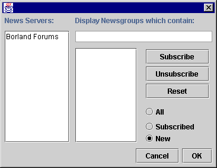
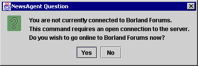
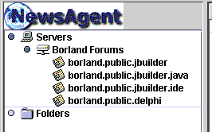

Setting Up Newsgroup Subscriptions
|
   |
About Newsgroups
News contained on Network News servers is contained in a number of special
interest areas, known as Newsgroups. There are many thousands of common Newsgroups,
and the groups which are available will vary from server to server. Whatever
you are interested in, there may well be a Newsgroup catering to you and others
around the world who have a similar interest.
Since there are so many Newsgroups, NewsAgent requires you to subscribe
to Newsgroups which you are interested in. Of course, you can change the groups
you are subscribed to at any time.
Changing Subscriptions
Before you can subscribe to Newsgroups, you must
tell NewsAgent what News Server to use. Next, do the following:

- Select the News Server you wish to change subscriptions for by clicking
over its name in the News
Servers list. If you aren't
currently connected to the News Server, you will see the following message:

- Press enter, or click on "Yes" to allow NewsAgent to open a connection
to your News Server.
- NewsAgent will display a status message, while it connects to the server
and downloads the list of new newsgroups. This will take slightly longer than
usual the first time you do it, since NewsAgent has to download the whole
list of groups from the server.
- Newsgroups will now be displayed in the central list. You can change the
contents of the list by clicking on one of the three radio buttons at the
right of the dialog:
| All |
Show all the newsgroups the server provides. |
| Subscribed |
Just show newsgroups to which you have subscribed. |
| New |
Just show newsgroups which have been added to the server since the last
time you checked. |
- You can subscribe to any newsgroup by selecting it and clicking on the Subscribe
button. Conversely, you can unsubscribe by selecting and clicking on Unsubscribe.
In fact, you can select multiple newsgroups in the list to subscribe to or
unsubscribe from. The way in which this is done is platform dependent. Normally,
it involves holding down shift or some other modifier key (such as Ctrl) and
selecting items.
- Click on OK to save your subscription changes. You should now be able to
see your subscribed newsgroups in the tree control at the left of the main
NewsAgent window:

[ See Also: The Subscriptions Dialogue
| Servers:
Subscriptions ]
Next Page: Reading News